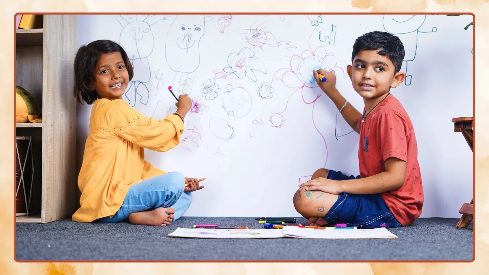

Orchids The International School is a trusted choice for many parents in Bannerghatta, Bangalore. The school is situated in a peaceful and well-connected part of the city, within a growing educational neighbourhood that blends modern learning with traditional values. We focus on strong academics along with the overall development of each student. Many families prefer Orchids Bannerghatta for its welcoming environment, thoughtful teaching methods, and supportive atmosphere that encourages learning with confidence. Recognized as one of the best cbse schools in Bannerghatta, our campus offers digital classrooms, fully equipped science and computer labs, a spacious playground, and dedicated areas for art and creative activities. These facilities help make learning more engaging and enjoyable for every child. With a team of experienced teachers and a balanced approach to academics and co-curriculars, the school helps students build essential skills through sports, dance, robotics, and other meaningful activities.

Yes, we offer safe and GPS-enabled school bus transport covering a large perimeter in and around Bannerghatta Road. Our trained staff ensure that children board and leave safely.
We maintain a low student–teacher ratio so that every child receives personal attention. On average, there is 1 teacher for every 15–20 students in our classrooms.
Orchids The International School, Bannerghatta students win awards in academic competitions and extracurricular events, which prove their educational and creative skills. Each child here receives personal attention and support, which helps them learn at their own pace and reach their full potential. As a top CBSE school in Bannerghatta, we provide an environment where students thrive in academics and beyond. Get a glimpse of life at our school in Bannerghatta through our gallery featuring vibrant classrooms, modern sports facilities, and engaging co-curricular activities that define the school's experience.